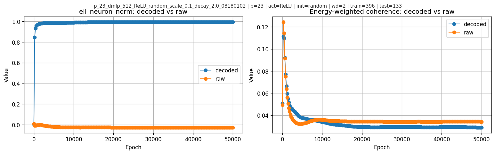
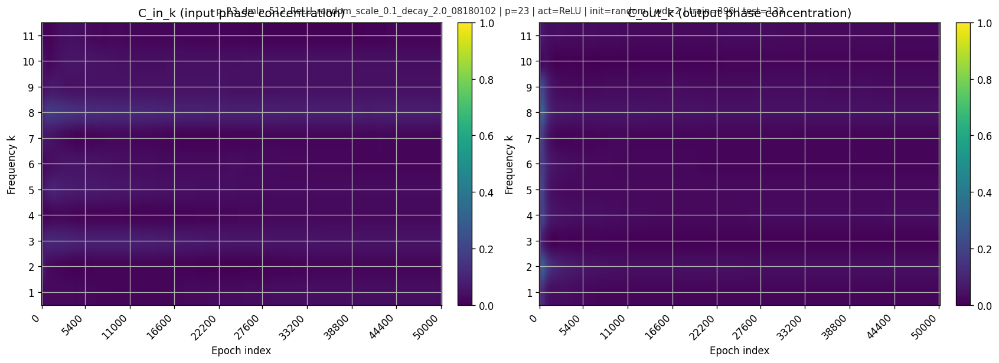
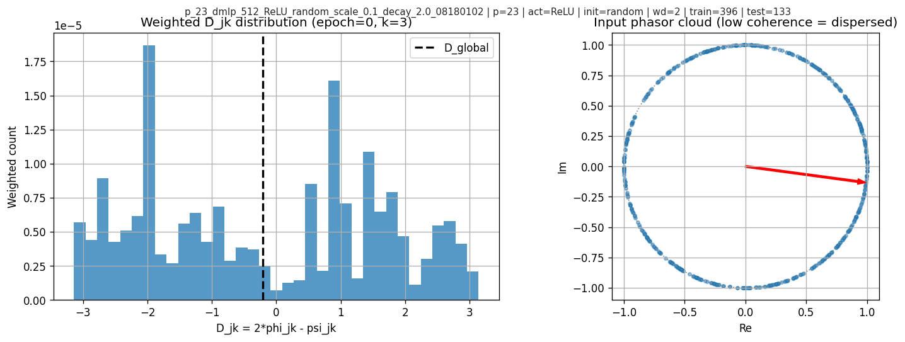
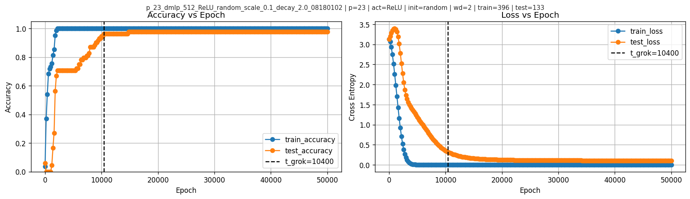
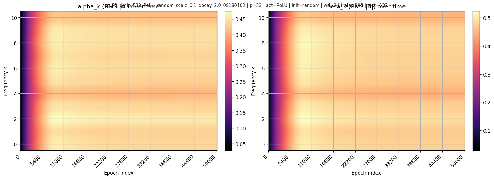
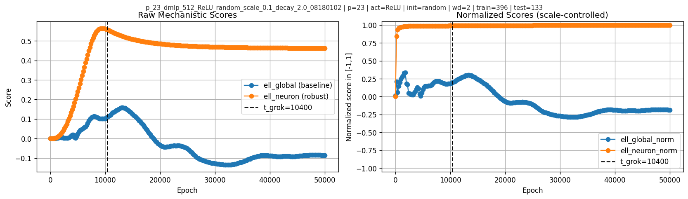
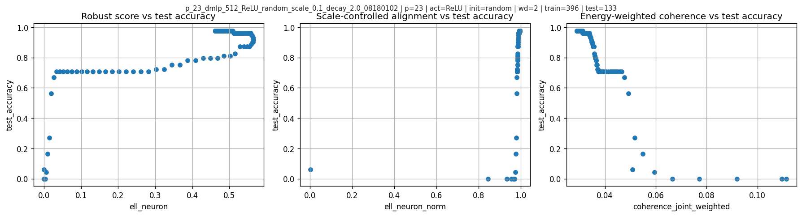
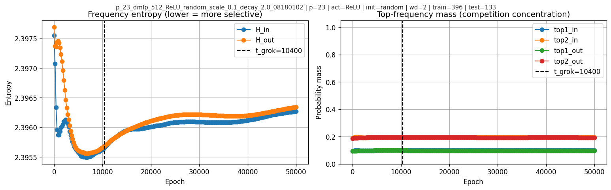

Seeking an “Effective Loss” for Grokking in Modular Addition
(A case study in Fourier features, phase alignment, and what can go wrong with “global phases”)
TL;DR
I read the very recent "On the Mechanism and Dynamics of Modular Addition: Fourier Features, Lottery Ticket, and Grokking" paper, and developed some ideas. I am not trying to propose/refine the grokking theory, but am testing whether a checkpoint-level mechanistic score can be defined in a way that is measurement-valid, coordinate-aware, and less confounded by pure scale growth, so that we can meaningfully ask whether phase-alignment structure tracks generalization.
Concretely, this case study builds candidate alignment scores (global-phase and neuronwise) from Fourier coefficients, stress-tests coordinate assumptions (decoded vs raw pairing), tests whether global phase is trustworthy when coherence is low, compares these scores against real test accuracy, and adds simple defenses against the objection that any strong correlation might just be epoch/time. As a sanity check, I re-evaluate saved checkpoints and confirm recomputed accuracies match the stored values.
Key takeaways from this run (\(p=23\), width=512, ReLU, random data, weight decay=2.0):
- Using sampled checkpoints, I define \(t_{\text{grok}}\) as the first checkpoint where test accuracy reaches 95%, and find \(t_{\text{grok}}=10400\).
- A global phase-based alignment score can be actively misleading under low coherence; I show an explicit counterexample.
- The raw neuronwise score \(\ell_{\text{neuron}}\) does not simply rise with test accuracy: it peaks at epoch \(9400\), shortly before \(t_{\text{grok}}=10400\), then declines and flattens. The normalized score \(\ell_{\text{neuron\_norm}}\) tells a different story and stays near-saturated.
- In this run, global coherence does not increase at grokking; the weighted joint coherence decreases.
- The anti-time-trend checks help, but they do not turn this into a causal story: after controlling for simple magnitude baselines, the added coefficient on \(\ell_{\text{neuron\_norm}}\) is slightly negative in this run.
1. Background: modular addition and grokking
Modular addition toy task
Fix a prime modulus \(p\) (here \(p=23\)). Inputs are pairs \((a,b)\) and the target is:
\[ y = (a+b) \bmod p. \]
We train a small MLP classifier to predict \(y\).
Grokking (in this setting)
“Grokking” refers to the phenomenon where training accuracy becomes perfect early, test accuracy remains poor for a long time, and then test accuracy suddenly rises to near-perfect later.
For this case study (with sampled checkpoints), I use:
\[ t_{\text{grok}} = \min\{t: \text{test\_accuracy}(t) \ge 0.95\}. \]
That is: the first sampled checkpoint where test accuracy crosses 95%.
In this run the crossing is sustained thereafter, so this thresholded checkpoint is a reasonable proxy.
2. What the original “Mechanism and Dynamics” work claims
2.1 Baseline and Open Gap
Nanda et al. (2023) already observed one-layer transformers on modular addition learn Fourier features, many neurons become approximately single-frequency, and input/output phases satisfy a doubled relation (\(\psi\approx 2\phi\)). The open gap is how noisy neuron-level features exactly aggregate into a correct network-level computation.
2.2 Network-Level Aggregation
The authors describe this with the phrase “majority voting,” but mathematically it is coherent summation with cancellation: when neuron phases are spread out, noise terms cancel and the correct signal remains. In their analysis this appears through conditions like \[ \sum_m e^{i\ell\phi_m}\approx 0\quad \text{for } \ell\in\{2,4\}, \] together with frequency balance and similar magnitudes across neurons. The resulting predictor is a “flawed indicator”: it includes extra peaks (e.g. at \(2x,2y\) mod \(p\)), but the correct class still keeps a strict margin (reported as \(p/4\) in the normalized indicator form, equivalently \(aNp/8\) under their logit scaling). This is why they argue overparameterization helps: more neurons improve phase diversity and make cancellation work better.
2.3 Frequency Selection Dynamics
Their second claim is a frequency-selection dynamic under small initialization. For each (neuron, frequency) pair they derive a low-dimensional ODE system. Here \(\alpha\) and \(\beta\) denote the input/output amplitude for that specific neuron-frequency pair (local variables, not yet averaged across neurons), and \[ D=(2\phi-\psi)\bmod 2\pi \] is the phase-misalignment variable, with dynamics of the form \[ \partial_t\alpha \approx 2p\,\alpha\beta\cos D,\quad \partial_t\beta \approx p\,\alpha^2\cos D,\quad \partial_t D \approx -p\left(4\beta^2-\alpha^2/\beta\right)\sin D. \] This makes alignment a growth gate: frequencies with smaller initial \(|D|\) align faster, and the eventual winner is determined by the combination of initial phase misalignment and initial spectral magnitude. Based on close reading the paper is a little ambiguous but implies phase misalignment dominates in their theoretical regime, while magnitude matters in practice. The authors call this winner-take-all effect a “lottery ticket” mechanism; this is stretched relative to the original Lottery Ticket Hypothesis (sparse subnetworks), because the selection object here is phase-aligned frequency components rather than sparse masks.
2.4 Phase Alignment as Dynamics
Their third claim is that phase alignment is dynamical, not merely observed: \(D=0\) is a stable attractor (with \(D=\pi\) unstable, up to measure-zero cases). The doubled phase relation is tied to quadratic feature interactions, which generate terms of the form \(\cos(\cdot+2\phi)\) and therefore couple naturally to \(\psi\).
This raises a natural “effective theory” question (in the spirit of Liu et al., Towards Understanding Grokking: An Effective Theory of Representation Learning):
Can I define a low-dimensional effective loss / score on weights that captures this competition and tracks generalization?
3. Our question and why the earlier attempt went off the rails
A naive attempt might define a “lottery score”
\[ \ell_{\text{lottery}} = \sum_k \alpha_k^2\,\beta_k^2\,\cos(D_k), \]
where \(\alpha_k, \beta_k\) are frequency-level magnitudes (aggregated over neurons) at input/output and \(D_k\) is a phase mismatch. So these are related to, but distinct from, the local \(\alpha,\beta\) variables used in Section 2.3.
But there’s a subtle issue:
In a width-\(m\) network, each frequency \(k\) has \(m\) different phases (one per neuron).
Collapsing them into one global phase can be meaningless if those phases cancel out.
My last attempt effectively assumed the global phase was always meaningful, then layered additional dynamics (ODE/Jacobian/etc.) on top. This can produce incorrect “mechanistic conclusions.”
4. Fourier features: turning weights into per-frequency complex coefficients
Because \(p=23\) uses a real Fourier basis with DC + cosine/sine pairs, each frequency \(k\in\{1,\dots,(p-1)/2\}\) corresponds to indices \(i_{\cos}=2k-1\) and \(i_{\sin}=2k\).
Let hidden width be \(m\) (here \(m=512\)). For each neuron \(j\) and frequency \(k\), define complex coefficients:
Input-side (from \(W_{\mathrm{in}}\in\mathbb{R}^{m\times p}\)):
\[ A_{j,k} = W_{\mathrm{in}}[j,i_{\cos}] + i\,W_{\mathrm{in}}[j,i_{\sin}]. \]
Output-side (from \(W_{\mathrm{out}}\in\mathbb{R}^{p\times m}\)):
\[ B_{j,k} = W_{\mathrm{out}}[i_{\cos},j] + i\,W_{\mathrm{out}}[i_{\sin},j]. \]
Then magnitude summaries:
\[ \alpha_k = \sqrt{\mathbb{E}_j |A_{j,k}|^2},\qquad \beta_k = \sqrt{\mathbb{E}_j |B_{j,k}|^2}. \]
In the codebase, there is an additional subtlety: the model stores a Fourier basis matrix, and the “mechanism” utilities use a decoded coordinate system via a basis transform. I therefore compare raw pairing vs decoded pairing and find they can differ drastically:
| metric | pearson(decoded,raw) | mean_abs_ratio(decoded/raw) |
|---|---|---|
| ell_neuron | -0.989643 | 41.0202 |
| top1_out | -0.601669 | 1.04266 |
| ell_neuron_norm | -0.449375 | 39.7208 |
| ell_global | 0.163316 | 2.60735 |
| coherence_joint_weighted | 0.928163 | 0.914953 |
| sum_alpha2beta2 | 0.999984 | 1.09141 |

For reference, decoded vs raw per-frequency magnitudes at one epoch:
| k | alpha_decoded | beta_decoded | alpha_raw | beta_raw |
|---|---|---|---|---|
| 1 | 0.438788 | 0.475687 | 0.421154 | 0.468041 |
| 2 | 0.434632 | 0.469976 | 0.421162 | 0.459401 |
| 3 | 0.454894 | 0.488653 | 0.420134 | 0.461778 |
| 4 | 0.434974 | 0.473973 | 0.42238 | 0.451873 |
| 5 | 0.40966 | 0.443738 | 0.43655 | 0.463319 |
5. Global phases vs neuronwise alignment
This is the conceptual core.
5.1 What does “phase coherence” mean?
Each \(A_{j,k}\) has a phase \(\theta_{j,k} = \arg(A_{j,k})\). If phases cluster, they are coherent. If phases spread around the circle, they are incoherent and cancel.
A standard concentration metric is:
\[ C_k^{\text{in}} = \frac{\left|\sum_j A_{j,k}\right|}{\sum_j |A_{j,k}| + \varepsilon}\in[0,1]. \]
Similarly \(C_k^{\text{out}}\) with \(B\).
\(C\approx 1\) means phases align (coherent), while \(C\approx 0\) means phases disperse (incoherent; heavy cancellation). In this run, the weighted joint coherence is low throughout and actually drops from \(0.0447\) before grokking to \(0.0299\) after grokking.
Heatmaps over time:

5.2 Global phase-based alignment (fragile)
Global-phase alignment collapses all neurons into one phasor:
\[ \bar A_k = \sum_j A_{j,k},\quad \bar B_k = \sum_j B_{j,k} \]
and defines phases:
\[ \phi_k = \arg(\bar A_k),\quad \psi_k=\arg(\bar B_k),\quad D_k^{\text{global}}=2\phi_k-\psi_k. \]
Then a score like:
\[ \ell_{\text{global}}=\sum_k \alpha_k^2\beta_k^2\cos(D_k^{\text{global}}). \]
This is only meaningful when \(C_k\) is not tiny.
5.3 Neuronwise weighted alignment (robust)
Instead, compute mismatch per neuron:
\[ D_{j,k} = 2\arg(A_{j,k}) - \arg(B_{j,k}). \]
weight by “how much this neuron-frequency matters”:
\[ w_{j,k}=|A_{j,k}|^2|B_{j,k}|^2. \]
Define a robust alignment score:
\[ \ell_{\text{neuron}} = \sum_k\sum_j w_{j,k}\cos(D_{j,k}). \]
And a scale-controlled version:
\[ \ell_{\text{neuron\_norm}} = \frac{\sum_k\sum_j w_{j,k}\cos(D_{j,k})}{\sum_k\sum_j w_{j,k}+\varepsilon}\in[-1,1]. \]
5.4 A concrete failure mode: why global phase can “lie”
At low coherence, \(\bar A_k\) can be near zero and its angle is extremely sensitive. In one checkpoint shown here, coherence is low, \(\cos(D_k^{\text{global}})\) looks strongly aligned, but neuronwise weighted alignment is not.
The diagnostic plots:

This is the main methodological point: global phase is not a safe effective variable without a coherence check.
6. Results: grokking, magnitudes, and mechanistic scores
6.1 Grokking time and learning curves
In this run, I find \(t_{\text{grok}}=10400\).
Accuracy and loss:

6.2 Frequency magnitudes over time
Per-frequency RMS magnitudes:

6.3 Mechanistic scores over time
Raw scores (scale-sensitive) and normalized scores (scale-controlled):

The most visually striking feature here is in the raw neuronwise score: \(\ell_{\text{neuron}}\) rises early, peaks at epoch \(9400\), then starts decreasing before the grokking checkpoint at \(10400\) and later flattens. So in this primary run the interesting temporal signature is not “higher score means later higher test accuracy” in a monotone sense, but rather a pre-grok peak followed by relaxation. By contrast, \(\ell_{\text{neuron\_norm}}\) is already near 1 well before \(t_{\text{grok}}\) and does not show the same pre-grok turnover.
6.4 Scatter views (intuition)
Scatter of test accuracy vs various scores:

7. Is this just a time trend?
This is the strongest skeptical objection to any checkpoint-level correlation in a grokking run. Epochs are not i.i.d.; many quantities drift with training time, so a large Pearson coefficient alone is not enough.
7.1 Does \(\ell_{\text{neuron}}\) or \(\ell_{\text{neuron\_norm}}\) track test accuracy (hence grokking) in a meaningful way?
Yes, but the two scores behave differently. Over all 251 checkpoints, \(\ell_{\text{neuron}}\) has Pearson \(0.853\) and Spearman \(0.126\), while \(\ell_{\text{neuron\_norm}}\) has Pearson \(0.416\) and Spearman \(0.809\). For the question in this post, the raw score is more informative because it shows the distinctive pre-grok peak-and-relax pattern. The normalized score is mainly useful as a robustness check that the story is not purely an artifact of raw scale.
| metric | full-run Pearson | full-run Spearman | n |
|---|---|---|---|
| ell_neuron | 0.852752 | 0.125778 | 251 |
| ell_neuron_norm | 0.415690 | 0.808837 | 251 |
| ell_global | -0.206572 | -0.642997 | 251 |
7.2 Does it change near the grokking transition?
Yes, but not as a single clean step exactly at \(t_{\text{grok}}\). For the raw neuronwise score, the more precise statement is: it peaks at epoch \(9400\), then turns downward before \(t_{\text{grok}}=10400\), while test accuracy keeps rising and crosses 95% at \(10400\). In the transition-window first-difference analysis, \(\mathrm{corr}(\Delta \ell_{\text{neuron}}, \Delta \mathrm{test\_acc})=0.439\) and \(\mathrm{corr}(\Delta \ell_{\text{neuron\_norm}}, \Delta \mathrm{test\_acc})=0.414\), while the global-phase comparison is negative (\(-0.177\)).
This matters for interpretation: the neuronwise signal is not a monotone co-rise with test accuracy, and it is not a one-timestep trigger either. In this run it looks more like an anticipatory pre-grok peak in the raw score, followed by a decline/plateau as generalization finishes improving.
| metric | corr(\(\Delta\)metric, \(\Delta\)test_acc) | Spearman | n |
|---|---|---|---|
| ell_neuron | 0.438578 | 0.493835 | 31 |
| ell_neuron_norm | 0.413824 | 0.441853 | 31 |
| ell_global | -0.176867 | -0.139130 | 31 |
7.3 What if we remove the trivial early-training drift?
I also recompute correlations only after train accuracy has already saturated, starting at epoch 2200. In that post-saturation slice, \(\ell_{\text{neuron\_norm}}\) remains strongly associated with test accuracy (Pearson \(0.941\), Spearman \(0.777\)), while \(\ell_{\text{global}}\) stays negative (Pearson \(-0.347\), Spearman \(-0.648\)). I treat this as a robustness check, not the main mechanistic result.
| metric | post-saturation Pearson | post-saturation Spearman | n |
|---|---|---|---|
| ell_neuron | 0.798541 | -0.035365 | 240 |
| ell_neuron_norm | 0.941110 | 0.777498 | 240 |
| ell_global | -0.347233 | -0.647772 | 240 |
7.4 What if the epoch order is only weakly perturbed?
I also run a block-permutation sanity check on the post-saturation series. Both neuronwise scores survive it: \(\ell_{\text{neuron\_norm}}\) has observed correlation \(0.941\) with two-sided \(p\approx 0.001\), and \(\ell_{\text{neuron}}\) has \(0.799\) with \(p\approx 0.001\). \(\ell_{\text{global}}\) remains worse and negative.
So the answer to “is this only a time trend?” is: not obviously. The relationship is still time-series data and therefore still observational, but it survives several minimal defenses that go beyond a raw full-run correlation.
| metric | observed corr | null mean | null std | two-sided p |
|---|---|---|---|---|
| ell_neuron | 0.798541 | -0.003433 | 0.125090 | 0.000999 |
| ell_neuron_norm | 0.941110 | 0.002675 | 0.127562 | 0.000999 |
| ell_global | -0.347233 | -0.008710 | 0.127805 | 0.006993 |
7.5 What do the other runs say?
The auxiliary runs suggest the same broad pattern within each run: the neuronwise construction usually tracks test accuracy better than \(\ell_{\text{global}}\). I treat this section cautiously because these runs are heterogeneous, and for them I only have correlation summaries here rather than full score-versus-epoch curves.
| run_name | t_grok | corr(ell_neuron_norm,test_acc) | corr(ell_global,test_acc) |
|---|---|---|---|
| primary ReLU random wd=2.0 | 10400 | 0.415690 | -0.206572 |
| Quad random wd=0 | 9200 | 0.755449 | -0.611899 |
| Quad single-freq wd=0 | 1000 | 0.796293 | -0.173810 |
| ReLU random scale=0.01 wd=0 | 2200 | 0.902158 | 0.408718 |
| ReLU random wd=0 | 600 | 0.957542 | -0.279192 |
| ReLU random wd=0 (short) | 400 | 0.995223 | -0.206174 |
| ReLU single-freq wd=0 | 1400 | 0.905622 | 0.301164 |
8. Baselines and confound-control
The harder question is not whether these scores correlate with test accuracy, but whether they outperform bad baselines and whether any alignment-specific signal remains after controlling for magnitude-like growth.
Over the full run, the main correlations are:
| metric | pearson_corr_with_test_accuracy | spearman_corr_with_test_accuracy |
|---|---|---|
| param_norm | 0.938828 | 0.119228 |
| ell_neuron | 0.852752 | 0.125778 |
| sum_alpha2beta2 | 0.850553 | 0.121375 |
| top1_out | 0.682059 | -0.322528 |
| top1_in | 0.537051 | -0.011239 |
| ell_abs_norm | 0.421137 | 0.808837 |
| ell_neuron_norm | 0.415690 | 0.808837 |
| H_in | 0.012456 | 0.607531 |
| ell_global | -0.206572 | -0.642997 |
| ell_global_norm | -0.413616 | -0.685532 |
| H_out | -0.514215 | 0.389748 |
| coherence_in_weighted | -0.788074 | -0.808001 |
| coherence_out_weighted | -0.821839 | -0.772502 |
| coherence_joint_weighted | -0.910400 | -0.808853 |
| coherence_mean | -0.913383 | -0.808853 |
\(\ell_{\text{neuron}}\) clearly outperforms the bad baseline \(\ell_{\text{global}}\), which is negative and also fails the counterexample in Section 5.4. But it does not cleanly beat simple magnitude baselines on raw Pearson; \(\sum_k \alpha_k^2\beta_k^2\) and parameter norm are just as strong or stronger.
I also run a simple confound-control regression: baseline predictors are magnitude-like terms, and I test whether adding the alignment-only score improves fit.
| model | n | r2 | coef[sum_alpha2beta2] | coef[top1_out] | coef[param_norm] | coef[ell_neuron_norm] | coef[ell_abs_norm] |
|---|---|---|---|---|---|---|---|
| baseline | 251 | 0.934770 | -0.125615 | -0.079513 | 0.355308 | nan | nan |
| baseline + ell_neuron_norm | 251 | 0.941911 | -0.149663 | -0.084452 | 0.390590 | -0.019205 | nan |
| baseline + ell_abs_norm | 251 | 0.941929 | -0.149949 | -0.084552 | 0.391087 | nan | -0.019317 |
The incremental improvement is real but small (about \(0.007\) in \(R^2\)), and the added coefficient on \(\ell_{\text{neuron\_norm}}\) is slightly negative. The corresponding scale-controlled partial correlation is also negative (\(-0.331\)). The honest interpretation is:
In this run, the raw neuronwise score is the most interesting signal because it peaks before grokking, while the normalized version mainly serves as a robustness check against trivial time or scale stories.
But once simple magnitude baselines are included, the evidence for a positive alignment-only effect is weak. So this is a useful observable, not yet a clean explanatory variable.
9. Frequency “competition” diagnostics
I also look at frequency entropy and top-frequency mass:

After the grokking boundary, the frequency-entropy and top-frequency-mass curves stay fairly flat. So these diagnostics do not show a dramatic winner-take-all takeover by a single frequency in this run.
10. What this case study tells us
What it proves / establishes
I can extract Fourier magnitudes and phase statistics from real checkpoints and reproduce stored accuracies. Global-phase alignment is not generally valid without coherence, and the post shows an explicit counterexample. Neuronwise alignment is a robust effective observable that behaves sensibly even when global phases cancel.
What it suggests (but does not prove causally)
Some low-dimensional scalar(s) do track generalization in this run, but not always in a simple monotone way. The clearest temporal signature is that the raw neuronwise score peaks before grokking and then relaxes. The normalized score is less useful for that purpose because it is nearly saturated early, though it still helps as a robustness check. But simple magnitude baselines also track strongly, and the scale-controlled confound analysis does not yield a positive alignment-only effect. So the current evidence supports measurement value more than mechanism-level explanation.
11. Where to go next
To make this a real “effective theory” result (rather than a single-run case study), the next steps are:
- Weighted coherence matched to alignment weights: measure phase coherence using the same weights \(w_{j,k}\) to test whether “important neurons” become coherent even if global coherence drops.
- Interventions: modify training to selectively affect alignment (e.g., constrain phases, change regularization) while keeping norms similar.
Useful cautionary lessons
- Coordinate choices matter: decoded vs raw pairing can flip signs and alter interpretation. Any mechanistic score must specify coordinate conventions and include a sanity check.
- Phase cancellation matters: if coherence is low, global phasors are unstable summaries; neuronwise alignment is safer.
- Norm and time confounds matter: strong raw correlations can mostly reflect scale growth or epoch drift. Always compare against magnitude baselines and include at least one anti-time-trend check.
This does not show that the proposed effective loss captures or precisely predicts grokking. It is still one observational time series.
Citation
He, Jianliang; Wang, Leda; Chen, Siyu; Yang, Zhuoran.
On the Mechanism and Dynamics of Modular Addition: Fourier Features, Lottery Ticket, and Grokking.
arXiv preprint arXiv:2602.16849, 2026.
https://arxiv.org/abs/2602.16849
If you'd like to cite this blogpost:
@misc{liu2026effective-loss-grokking,
title = {Seeking an Effective Loss for Grokking in Modular Addition},
author = {Liu, Chryseis},
year = {2026},
month = {March},
url = {https://chryseisliu.github.io/blog-effective-loss-case-study.html},
note = {Blog post}
}